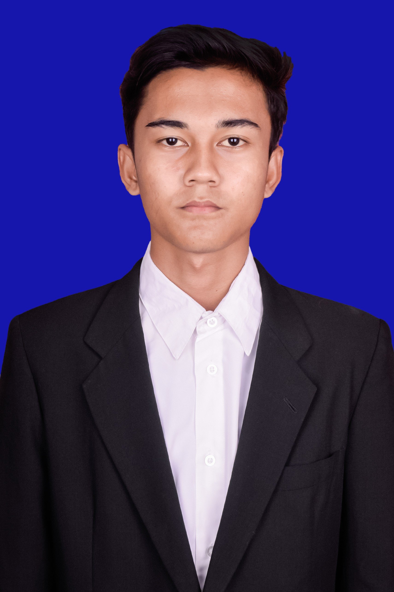

| Nama | : Dimas Meisandi Firdausi |  |
| Alamat | : Kabupaten Pamekasan | |
| Tempat, Tanggal Lahir | : Pamekasan, 01 Mei 2006 | |
| Nomor HP | : 082245224526 | |
| : dimasmeisandi@gmail.com |
Bergabung dengan Unit Kegiatan Mahasiswa (UKM) memberikan banyak pengalaman berharga.Salah satunya di UKM FT ITC, disini saya dapat mengembangkan keterampilan di luar akademik, memperluas jaringan pertemanan, serta berkontribusi dalam berbagai kegiatan kampus. Selain itu, saya belajar tentang kerja sama tim, tanggung jawab, dan kepemimpinan yang sangat bermanfaat untuk kehidupan perkuliahan maupun di masa depan.
Kesan ada awal perkuliahan, saya merasakan campuran perasaan antara senang dan gugup. Bertemu dengan teman-teman baru dari berbagai daerah dan latar belakang memberikan pengalaman yang berharga. Selain itu, saya juga harus beradaptasi dengan sistem pembelajaran yang berbeda dari sekolah, di mana kemandirian dan tanggung jawab menjadi hal utama dalam menyelesaikan tugas dan mengikuti perkuliahan."
Harapan selama perkuliahan ini dapat terus berkembang, baik dalam hal akademik maupun non-akademik. Saya ingin menggali lebih dalam ilmu yang saya pelajari, aktif dalam berbagai organisasi, serta membangun relasi yang bermanfaat untuk masa depan. Semoga perjalanan kuliah ini membawa saya lebih dekat ke cita-cita dan memberikan pengalaman yang tak terlupakan.